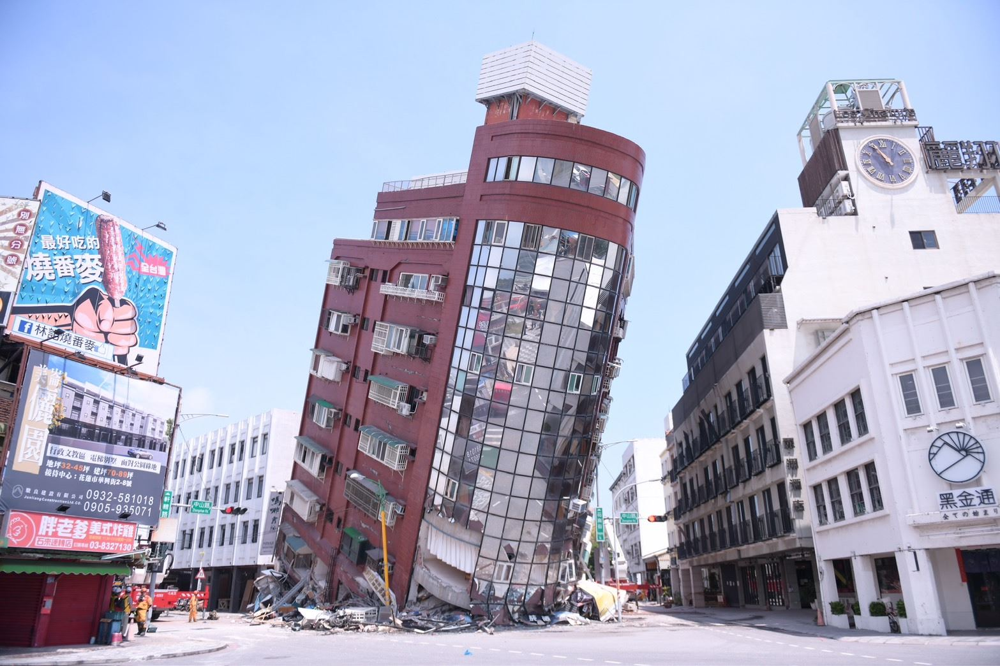
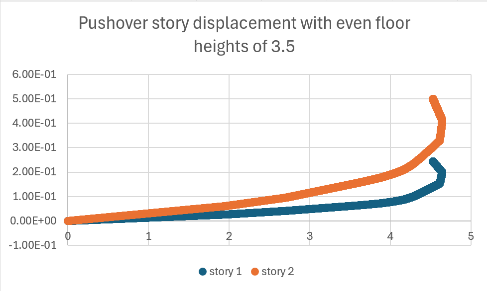
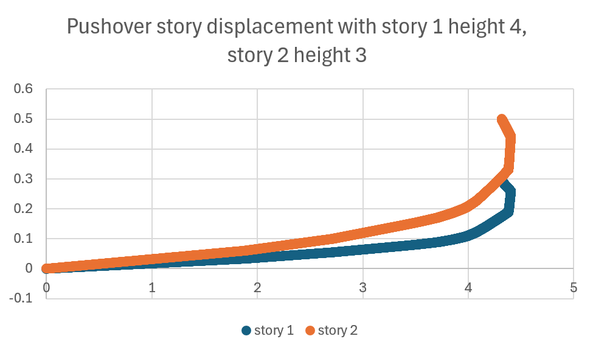

Soft story buildings are buildings with a weaker first floor. The first floor has less stiffness, often because they are missing shear walls (walls essential for resisting sideways forces) due to convenience or aesthetics.
This is dangerous because if the first floor of a building is weak, then during an earthquake, it won’t be strong enough to withstand the bending or movement of the upper floors. This can cause building collapse.
For example, there may be wide doors, large commercial spaces, large windows, or a parking garage on the first floor.
Soft story conditions can be found in buildings with multiple stories, typically those with three or more stories.
This is how the Uranus Building collapsed in the 2024 Hualien earthquake.
 Hualien County Government, Attribution, LinkSome buildings have floors with especially high ceilings, commonly due to aesthetics. In fact, research has shown that higher ceilings can be preferred.
However, this can be dangerous because higher ceilings decreases the strength of a building, due to features like longer columns, which are more susceptible to bending and deformation.
This can also contribute to the soft story effect, due to the decreased stiffness of floors with higher ceilings.
We have built models on Opensees, then used pushover analysis to determine the effect of increased ceiling height. Here’s our results:
 We can observe an increased movement of the first story when we heighten the ceiling of the first story. Thus, although the movements are similar between raised ceiling or not, we can see that a raised ceiling will lead to more building movement during an earthquake, which will make the building more prone to collapse.
Other than buildings weakening over time, buildings built prior to the 1999 earthquake are less strict on regulations and may be missing some of the essential earthquake resistant features.